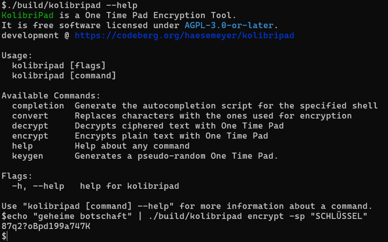
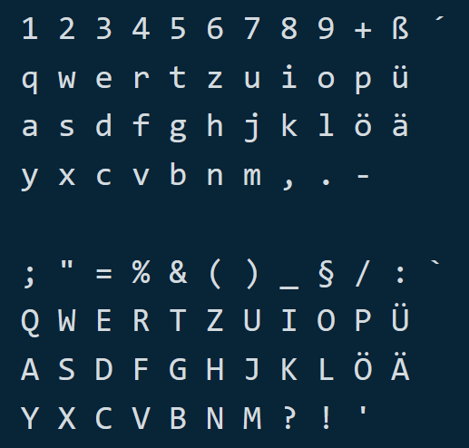
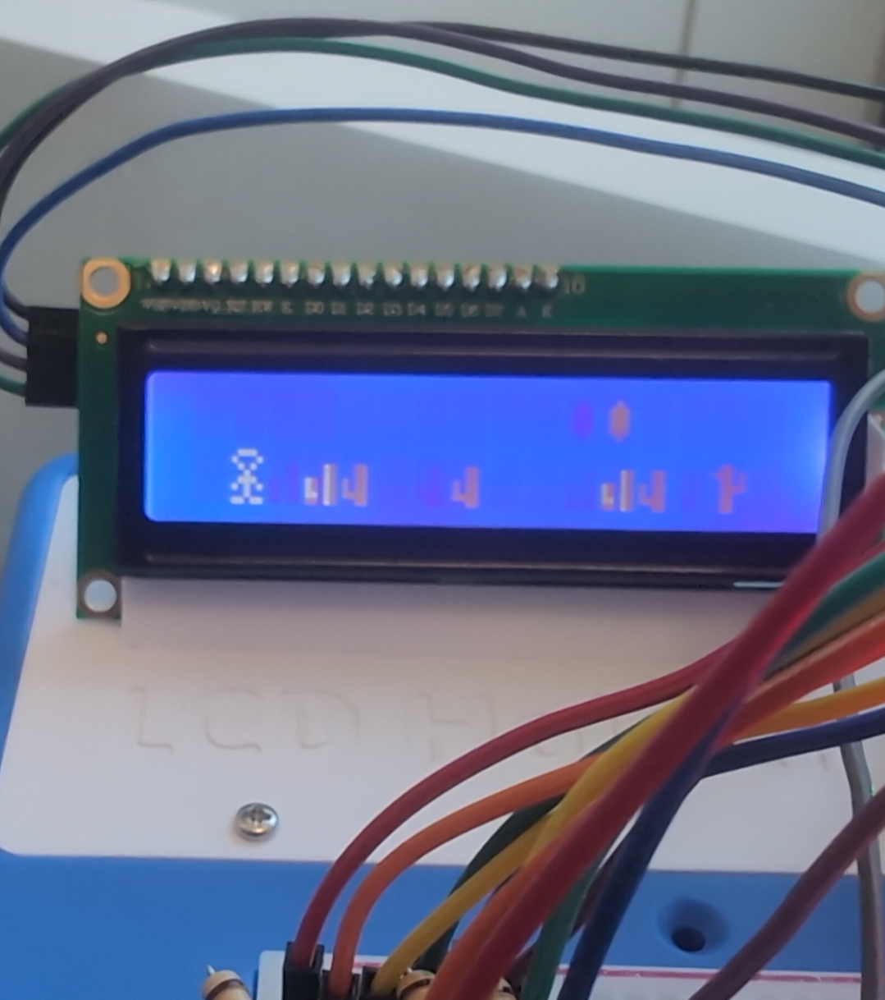
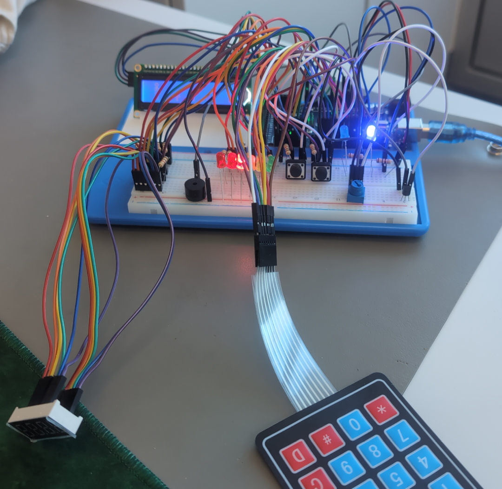
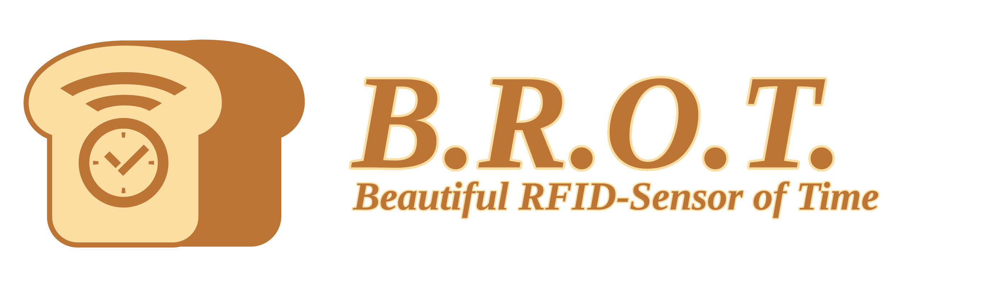
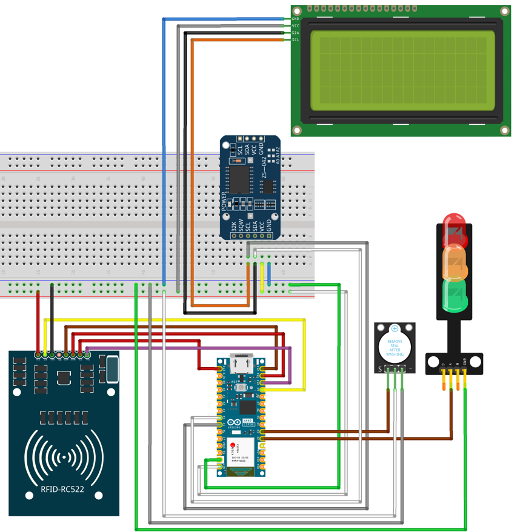
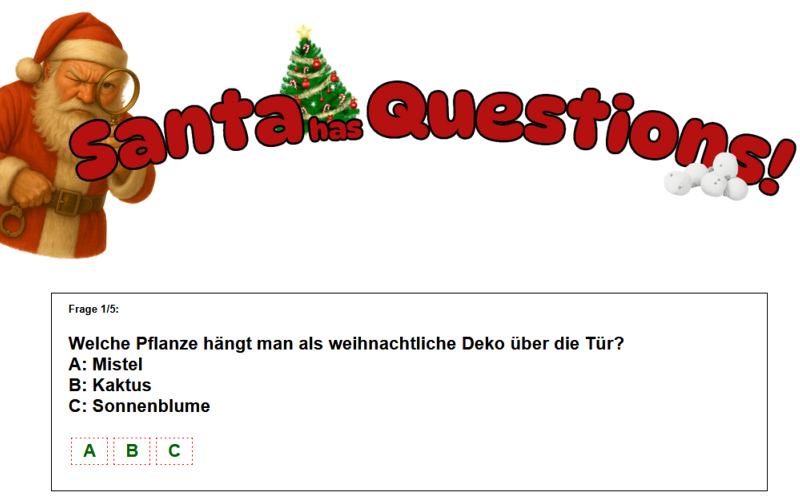
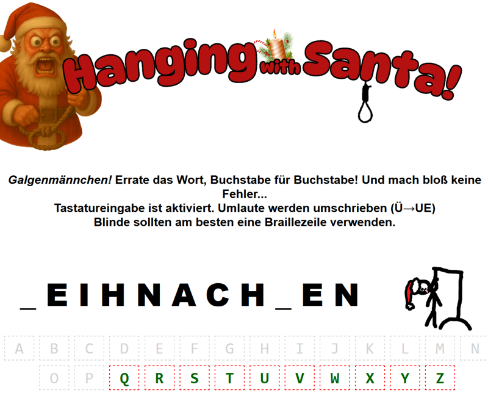
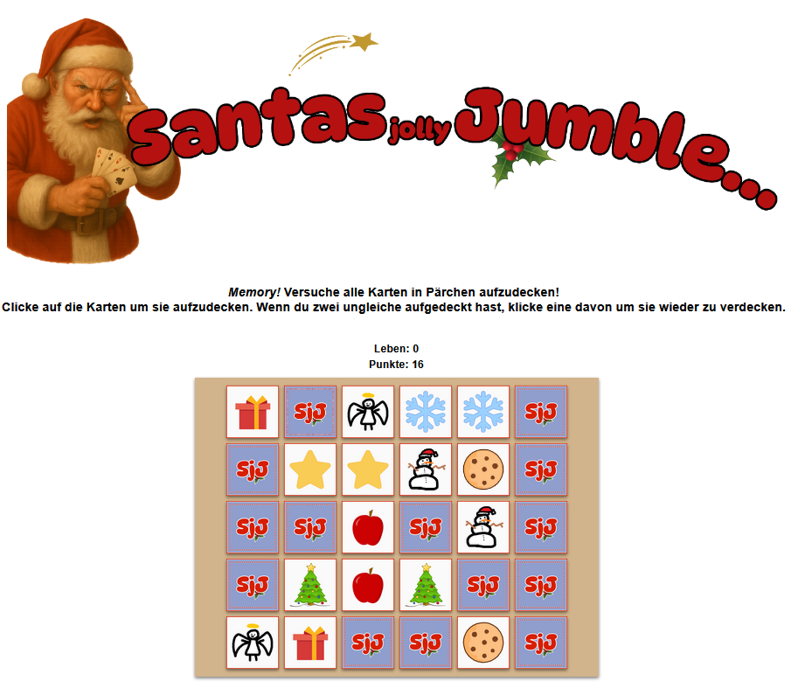
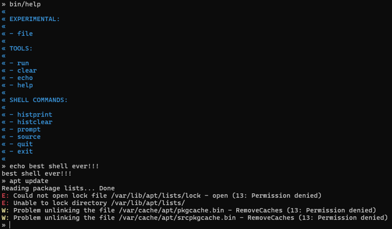

portfolio
kolibripad


(88 Tasten ostdeutscher Schreibmaschinen)
KolibriPad ist eine einfache implementation der One Time Pad Verschlüsselung. Es ist ein CLI-Programm geschrieben in Go mit Cobra.
arduino jumper


Displays, Eingabegeräte, LEDs, Lautsprecher und ganz viel Kabelsalat
Arduino Jumper ist ein Endless Runner, ähnlich wie das Chrome Dinosaurier Spiel, für unsere Arduino Baukästen. Es unterstützt viele optionale Bauteile, kann aber auch einfach mit Display und Gamepad gespielt werden. Ziel des Spiels ist es, so lange wie möglich zu überleben und dabei so viele Münzen wie möglich einzusammeln, ohne in einen Kaktus zu springen!
b.r.o.t.


W.E.I.S.S./B.R.O.T. ist ein Zeiterfassungssystem mit einem Arduino Nano ESP32. Azubis stempeln sich an dem B.R.O.T. mit ihrer Azubi-Karte ein. Nutzerverwaltung und Auswertung passieren über die Wendige Einstempel-Internet-Server-Software.
Repos (intern):
W.E.I.S.S. /
B.R.O.T.
adventsrätsel



Zu unserem Adventskalender habe ich unter anderem die Weihnachtsrätsel beigetragen. Das Backend ist in Go mit Gin und Gorilla Websockets geschrieben. Die Sieger der Spiele konnten sich für ein Gewinnspiel qualifizieren.
cshelltest

Cshelltest ist eine einfache Shell (geschrieben in C) um die Sprache zu lernen. Sie auch eine Skriptsprache!